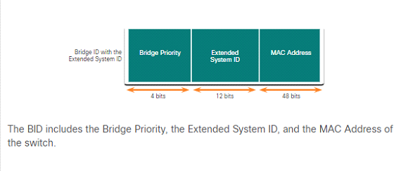
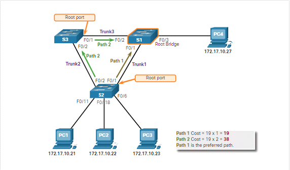
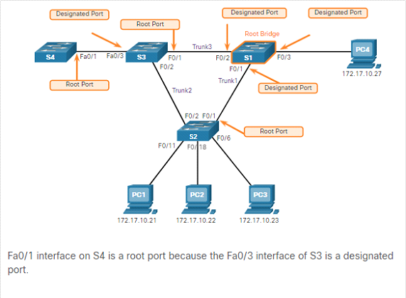
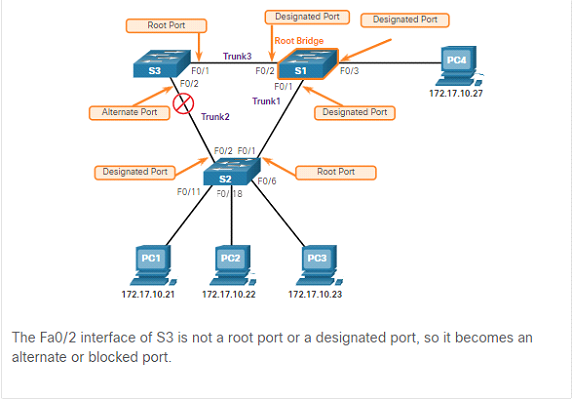
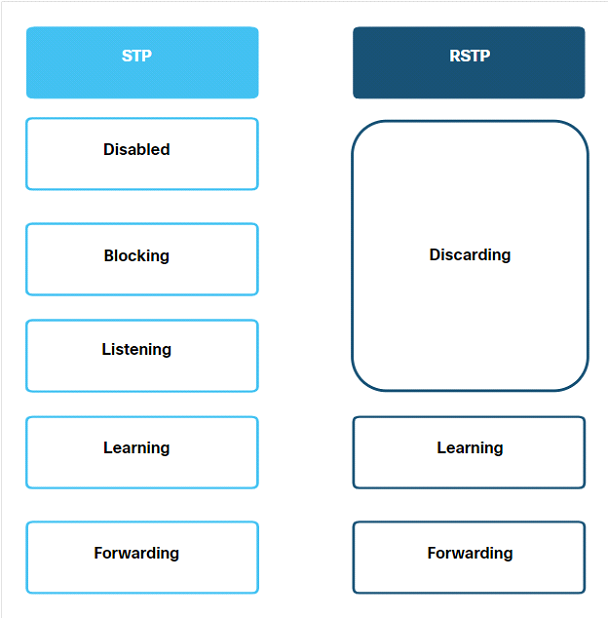
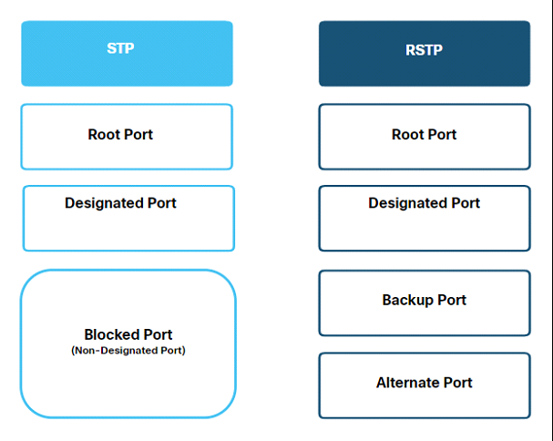

Spanning tree protokol, principy, použití v LAN, BPDU
Spanning tree protokol
standartizován jako IEEE 802.1D
Jedná se o síťový protokol který v ethernetových LAN sítí zabraňuje potažmo odstraňuje smyčky. Tím způsobem že redundantní spoje odpojí což předchází zahlcení sítě při nekonečném kolování paketů. Spanning tree také dokáže zablokovaný spoj povolit za předpokladu že povolený byl odebrán a zablokovaný je jediný další relevantní spoj.
Problémy:
Přechází problému nazvaný Broadcast Storm, který může zahltit síť a znemožnit její další fungování. Může k němu dojít při posílání unicast frameu za předpokladu že nefunguje spanning tree protokol bude MAC adresy do nekonečna přepisovat protože switch neví jaký port poslal unicast frame.
Princip algoritmu:
Elect the root bridge.
Všechny switche v podsíti se účastní volení. Poté jak switch nabootuje začne rozesílat BPDU frame každé dvě vteřiny.
Bridge protocol Data Units - Switche pomocí nich sdílí informace o nich samotných a o jejich připojení. Využívají se při volbě root bridge, root ports, designated ports, and alternate ports. Každý BPDU obsahuje bridge ID (BID) = které obsahuje priority value, an extended system ID, and the MAC address of the switch

Switch s nejmenším Bridge priority vítězí, ovšem defaultně mají prioritu všechny switche nastavené na jednu hodnotu (u cisco switche se jedná o 32768 z rozsahu 0 to 61440 kde se přidává po 4096). V tu chvíli připadá v potaz Extended System ID které identifikuje VLAN ve které se daný BPDU nachází. Pokud jsou i tyto čísla stejné následně se porovnává jejich MAC adresa. Znovu ten kdo má nejnižší ten vyhrává.
Bridge priority to exact value -> switch(config)#spanning-tree vlan 1 priority 8192
Bridge priority to 28673 -> switch(config)#spanning-tree vlan 1 root secondary
Bridge priority to 24577 -> switch(config)#spanning-tree vlan 1 root primary
Pro zobrazení priorit -> switch(config)#do show spanning-tree
Nejprve se každý switch prohlásí za root bridge ale postupně swithce zjišťují kdo má vyšší prioritu než oni a jejich BPDU následně rozesílají dokud se nedohodnou na jednom switchy.
Elect the root ports.
Jak je odhlasován root bridge STA algoritmus je použit pro vybrání root portů. Každý switch vyjma root switche vybere jeden ze svých portů který je nejblíže k switchy (Má nejnižší path cost) a označí ho jako root port.
Path cost - STA algoritmus začne zjišťovat nejvýhodnější cestu z jednotlivých portů switche až k root bridge. Tato cesta známá pod názvem internal root path cost je vypočtena jako součet všech individuálních cen portů během cesty od switche až k root brigy. Když switch obdrží BPDU přičte cenu vstupního portu pro vypočtení celkové hodnoty. Hodnota portů je přenastavitelná.
Link Speed
STP Cost: IEEE
802.1D-1998
RSTP Cost: IEEE
802.1w-2004
10 Gbps
2
2,000
1 Gbps
4
20,000
100 Mbps
19
200,000
10 Mbps
100
2,000,000

Elect designated Ports.
Každý segment mezi dvěmi switchy musí mít jeden designated port. Designated porty jsou porty, které jsou na nejlepší cestě přijmout traffic do root bridge.
Všechny porty na root bridgy jsou designated
Pokud na jednom konci je root port to znamená že na druhém konci musí být designated port.
Pokud není mezi dvěma switchy ani jeden root port. V tom případě musíme dojít k rozhodnutí jinou cestou a to buď kdo má z dvou switchu menší internal root path cost. A pokud ani tak nemůžeme rozhodnout následně můžeme vyřešit stejně jako volení root bridge a to porovnání BPDU informací.
Pokud nerozhodne BPDU může rozhodnout, port priorita nebo v poslední řadě port ID

Elect Alternate (blocked) ports.
Pokud port není root nebo designated port stane se z něj alternated port. Alternate porty a backup porty jsou odstraněny či zablokovány abych přecházeli smyčkám.

Čas
Hello timer - The hello time is the interval between BPDUs. The default is 2 seconds but can be modified to between 1 and 10 seconds.
Forward Delay Timer - The forward delay is the time that is spent in the listening and learning state. The default is 15 seconds but can be modified to between 4 and 30 seconds.
Max Age Timer - The max age is the maximum length of time that a switch waits before attempting to change the STP topology. The default is 20 seconds but can be modified between 6 and 40 seconds.
Port state
Description
Blocking
The port is an alternate port and does not participate in frame forwarding. The port receives BPDU frames to determine the location and root ID of the root bridge. BPDU frames also determine which roles each switch port should assume in the final active STP topology. With a Max Age timer of 20 seconds, a switch port that has not received an expected BPDU from a neighbor switch will go into blocking state.
Listening
After the blocking state, a port will move to the listening state. The port receives BPDUs to determine the path to the root. The switch port also transmits its own BPDU frames and informs the adjacent switch that the switch port is preparing to participate in the active topology.
Learning
A switch port transitions to the learning state after the listening state. During the learning state, the switch port receives and processes BPDUs and prepares to participate in frame forwarding. It also begins to populate the MAC address table. However, in the learning state, user frames are not forwarded to the destination.
Forwarding
In the forwarding state, a switch port is considered part of the active topology. The switch port forwards user traffic and sends and receives BPDU frames.
Disabled
A switch port in the disabled state does not participate in spanning tree and does not forward frames. The disabled state is set when the switch port is administratively disabled.
Port State
BPDU
MAC Address Table
Forwarding Data Frames
Blocking
Receive only
No Update
No
Listening
Receive and send
No Update
No
Learning
Receive and send
Updating table
No
Forwarding
Receive and send
Updating table
Yes
Disabled
None sent or received
No Update
No
Rapid STP(RSP) IEEE 802.1w
Jedná se o evoluci STP která je rychlejší. Využívá stejný algoritmus jako STP pro určení root portů a topologie. Zvyšuje rychlost rekalkulace spanning tree pokud se topologie změní.
Změna v port stavech

Změna v port rolích

Backup port
As shown in the figure, the alternate port has an alternate path to the root bridge. The backup port is a backup to a shared medium, such as a hub. A backup port is less common because hubs are now considered legacy devices.